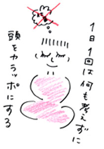

| 「汚い……」
そう思ったら、拭かずにはいられなかった。私は無言で給湯室に行き、雑巾をつかんで、自分の机にもどる。机の上を必死でこすった。優ちゃんがけげんな顔をしてこちらを見ている。
きっかけはささいなことだったんだ。
「ねぇ、朋美はお昼、何にする？」
会社で仲のいい同僚の優ちゃんが、私の机に手をかけた時、優ちゃんの手からこぼれたビスケットのかすが、私の机に落ちた。その瞬間、胸が苦しくなった。優ちゃんのことは大好きなんだよ。おしゃれだし、背がスラッと高くて、名前の通り友達思い。でも、強いて言えば、口紅の色が好きじゃなかったかもしれない。そのビスケットのかすに、口紅がついていて、私の机が汚れるような気がした。たまに誰にでもあるでしょ。自分があまり好きじゃない人が、自分や自分の物を触ったら、嫌だなという感覚。思わずパパッと払いたくなる気持ち。そんな感じ。
でも拭いた後は心がもとに戻って、私は慌てて優ちゃんに笑顔を向けた。
「どうしたの」
優ちゃんの不審気な顔。
「いや、さっき部長がさ、脂ぎった手で私の机を触ったのを急に思い出しちゃって、なんか胸がむかむかしてきたの」
ふふっと笑って肩をすくめたら、優ちゃんもやっと笑ってくれた。
「なーんだ。私、なんか朋美を怒らせちゃったのかと思ったよ」
「まっさかー」
笑いながら、優ちゃんが私の肩をたたく。
心が急速に冷えていくのを感じた。
私に触らないでよ。汚い。
もう一人の同僚の浩子が寄ってきて、私の机にもたれかかりながら話に加わる。そんなのいつもの光景。昨日まで普通に起こってきたこと。なのに、たまらなく嫌だ。お願い、触らないで。でも、そんなこと言えない。
雑巾を握りしめながら、私はお昼休み中、必死で笑った。
その日家に帰ってから、私は服を脱ぎ、お風呂場へ直行した。服を全部バケツの中に投げ込み、洗剤を入れて洗う。こすって流して、こすって流して。落ちたかな……。私の心の中の声が答える。まだ落ちてないよ。私は何を落としたいんだろう。わからない。目に見えない汚れ。洗っても、洗っても、汚い。みんなが触ったものが汚い。
「なにー、もうお風呂？」
やがてお母さんが仕事から帰ってきた。
「うん、ちょっと転んで汚れちゃったからー」
明るい声で私は答える。お母さんに話したら、きっと真面目に相談にのってくれると思う。でもだから、話したくなかった。お母さんに心配かけちゃだめだ。ぐっとそう思ったら、今日初めて涙がこぼれた。
お風呂からあがったら、もう２時間も経っていた。洗った服を洗濯機に投げ込み、脱水する。髪をふきながらリビングへ行くと、お母さんがテレビを見ながらご飯を食べていた。
「お風呂、長かったね」
私はうなづきながら、椅子に座る。お母さんは今日おこったニュ−スを真剣に見ていた。時折、思い出したように、ごはんを食べている。お母さんの口に運ばれるお箸。それから自分の手元にあるお箸が目に入った。お母さんのお箸と一緒にいつも洗われている、私のお箸。お母さんの唾液が私のお箸にもついているんだろうか……。
「食欲ないの？」
優しい声でお母さんが私にたずねる。私は一瞬目をあげて、お母さんの顔を見た。
「どうしたの、目が赤いじゃない。会社で何かあったの」
その言葉より、お母さんが私の肩にかけた手が気になって、私は体をそらせた。
「ごめん、ちょっと疲れているみたい」
お母さんはうなづいた。
「なんか朋美、最近ずっと忙しそうだったもの。春って節目だから、やっぱり広報の仕事も増えるんでしょ」
私は誰でも知っているような大手会社の広報に所属していた。
「うん、先輩ももうすぐ辞めるからね。そうしたら私がチーフになるの」
お母さんが目を輝かせて私を見た。
「すごいじゃない、朋美。３年でチーフだなんて。かなり早いんじゃない？」
お母さんの嬉しそうな顔に、すっと心が軽くなる。私は、お母さんのこんな顔が大好きだった。そしてそれが自分に向けられた時は、飛び上がりそうなほど嬉しい。
えへへっと笑って、ごはんに手をつけた時、お母さんがニコニコ笑いながら言った。
「でも人生は長いんだから、仕事休めるようなら、たまには休みなさいね」
その言葉が心にゆっくりと沈んでいくのを感じた。
人生は長い、人生は長い。その言葉が頭をぐるぐるまわる。その間、ずっとこの生活なの？ いやだ。何が嫌なの。自問自答しても、パニックになるだけで答えがでない。
「うん。明日は、会社休もうかな。今日ももう寝るね」
やっとのことでそれだけ答えて、２階の自分の部屋に向かう。
「あったかくして寝なさいよー」
あとからお母さんの声が追いかけてきた。
部屋に入って、ベットに横たわると急に動悸が激しくなった。
もう、私、どうしちゃったんだろう。やっぱり疲れているのかな。寝ようと思っても、何だか息苦しくて眠れない。布団の中でモゾモゾしていると携帯が鳴った。
時計を見ると、21時。彼氏のヨシくんがいつも電話をかけてくる時間だった。暗闇の中で机の上の携帯が点滅している。希望の光には見えなかった。電話に出て助けを求めたら、へんな子だって思われる。もう付き合って１年になるけど、今日の自分は見せられない。こんな自分、私だって嫌いだもん。汚いとか、動悸だとか、バカみたい。こんな弱い自分は大嫌い。
明日になったらまた電話するからね、ヨシくん。そう思って、携帯を無視した。
携帯が切れて暗闇にもどると、また動悸と息苦しさが増してきた。苦しい。息ができない。だんだん我慢できるレベルをこえてきた。部屋を出て、転がり落ちるように階段をおり、リビングにたおれこむ。
「お母さん……、苦しい」
お母さんの驚いた顔が一瞬目に入った。あとはもう顔をあげられなかった。苦しい。心臓がつぶれそう。お母さんが救急車を呼んでいる。
「朋美、朋美、しっかりして」
お母さんが涙声で私の背中をさする。触らないで。そう払いのけようとしても、もう声がでなかった。
数分で救急隊員の人が到着した。救急車の中で隊員の人がポツリと言う。
「過呼吸の可能性が高いですね」
「……なんですか、それ」
お母さんが救急車の人にかみつくように聞く。
「ストレスなどでなる人が多いんですけどね。まぁ死ぬようなものではないです」
ストレス？ そんなわけないじゃない。病院に行けばきっとわかる。こんなに苦しいんだもの。ストレスなんかじゃないよ。心ではそう思ったけど、口にはできない。ただ必死でお母さんの目を見た。お母さんも同じ思いだったんだと思う。私の手をぎゅっと握る。汗ばんだ手が汚いと感じて少し嫌だったけど、でもお母さんの心配してくれる気持ちは嬉しかった。やがて救急の病院について、先生に診察してもらう。先生も救急隊員の人と同じようなことを言う。うそだと思うけれど、口にできない。
「でも、苦しいんです……」
看護婦さんが紙袋をもってきた。
「この中で息をしてください」
言われたとおりにする。ちょっとはおさまった気がするけど、でも心をゆるめるとすぐに苦しくなってしまう。
「だめ、苦しい……」
私が紙袋を手放すと、お母さんが先生の目の前に立つ。
「先生、本当に大丈夫なんですか。こんなに苦しがっているんですよ。私、この子がこんなになったの、見たことがありません」
最後は涙声だった。先生がゆっくりとお母さんを見上げる。
「大丈夫です。ただの過呼吸ですよ。時間がくればおさまります。ただ不安が強いようだから、注射して、今日は１泊入院しましょう。明日もう一度検査します」
看護婦さんが私をベットに運び、注射をする。数分すると、息苦しさよりも強い眠気がおそってきてそのまま眠りについた。
朝、目をさますとベットのそばでお母さんがお茶を入れていた。
「気分はどう？」
「うん、大丈夫」
動悸はおさまっていた。ただあの時の苦しさの恐怖は、また心の中に残っている。お母さんが私にお茶を渡しながら言う。
「昨日、朋美が寝たあと、お母さんもう一度先生と話したの。インタ−ネットでも調べたわ。過呼吸って疲れていたり、ストレスがたまっているとなるみたいね。朋美は昨日疲れていたみたいだし、そうかもしれないなぁって思ったの」
「でも、本当に苦しかったんだよ」
お母さんに信じてもらえてない気がして、泣きそうになりながら言う。お母さんが私の頭をなでた。
「わかってる。本当に苦しそうだったもの。だから今日も、あと明日も会社休むといいわ。私が朋美の会社にうまいこと連絡しといてあげる。じゃあ、私仕事に行くね。病院でゆっくりしてからタクシーでうちに帰りなさい」
あまり寝ていないはずなのに、お母さんの化粧は崩れていない。窓からもれる光が、お母さんの背中にあたって、一層きれいに見えた。
お母さんが出ていってからしばらくすると、看護婦さんが入ってきて、心電図や血液検査に案内された。結果は異常なし。診察室から出た私に、看護婦さんがまた病室まで案内してくれる。
「私、昨日本当に苦しかったんですけど、でも気持ちの問題なんですね」
なんの病気でもなかったことが、悔しくて、情けなくて、涙がこぼれた。看護婦さんが、私の顔をのぞきこんで言う。
「良かったじゃない、体は元気で。泣くことじゃないでしょう？」
私の生活に何の関係もしていない看護婦さんだから、素直な気持ちが口をついてでる。
「でも、精神的なものであんな風になってしまったっていうのが情けないんです。昨日は昼間も同僚を汚いって思ってしまったり……。今までそんな風になったことなかったのに、やっぱり疲れているんでしょうか」
看護婦さんが首を傾ける。
「汚いってどういう風に？」
「自分の物や、体に触られるのがたまらなく嫌なんです。母のことも大好きなのに、昨日は嫌でたまらなかった。そんなのってバカみたいですよね」
しばらく考えてから、看護婦さんが私の目をのぞきこむ。
「良かったら、今日少し待つかもしれないけど、ここの心療内科を受診してみる？」
「心療内科って……」
「心と体の両方を見てくれる科のこと」
心臓がドクンと音をたてた。
「それって、精神科ってことですか」
「まぁ、言葉を変えれば、そうかな」
私は慌てて、かばんをつかんだ。
「大丈夫です。もう帰ります」
看護婦さんが私の腕をつかむ。
「待って。どうしたの」
私は看護婦さんの腕を振り払った。
「違う。心の問題じゃない。私は何の心配もないんですっ」
涙がポロポロこぼれ落ちた。こんな屈辱、初めてだと思う。私が精神病になんてかかるわけがない。ずっといつも人よりがんばって、常に一番になってきた。そんな普段の私を知らないから、そんなことが言えるんだ。看護婦さんの頬を殴りたいぐらい、腹が立った。
看護婦さんが私の両腕をつかむ。
「何の心配もなかったら、泣かないわよ。過呼吸にもならないわよ。どうして体が悪かったら内科に行けるのに、心が悪いときに精神科に行けないの。そんなのあなたの偏見よ」
確かにそうだ。私は精神科に偏見をもっている。普通の人が行くところじゃないと思っている。一流大学を出て、大手の会社に入って、もうすぐチーフになる私には、縁のないところだと思っている。
そこまで考えた時、また昨夜の恐怖がおそってきて、動悸が激しくなってきた。苦しくて、うずくまる。
「ごめん、ごめん、興奮させちゃったわね。ね、とにかく行きましょう。一度受診した方がいいわよ」
私の背中においた看護婦さんの手が温かい。さすられるのは気持ち良かった。
私はうなづいて病室を出る。たくさんの人がいる内科の前を通りすぎて、一番奥の心療内科のところまで行った。内科より、ひっそりしている。おじいさん、おばあさん、それから私と同じくらいの若い女の人は本を読んでいて、あとはうつむき加減の男の人、ネクタイをしめたおじさん……私が待合室に入っても、誰も私の方を見ない。でも包まれるような優しさを感じた。私はすっとその輪の中に入って、一番後ろの壁際に腰掛ける。一瞬、隣の女の人と目が合った。静かで優しい目。ここで過呼吸になっても、たぶん誰も驚かないし、冷やかにもならない。ただじっと何も言わずに、側にいてくれるんだろうと思う。
時が止まっているかのような、穏やかな空気だった。
いつものパソコンをたたく音や、コピー機がフル稼働している音、電話の声、周囲の笑い声が聞こえる世界が遠く思える。
「山下朋美さん、どうぞ」
名前を呼ばれて、立ち上がった。私より少し年上ぐらいの、背の高い男の人が、診察室から顔を出している。
心が他人に治せるの？ 自分でも原因がわからないのに？ ……わからない。ただ今は、あのざわめきの世界に戻れば、きっとまた動悸がおそってくる気がする。みんなから触れられたくないと思ってしまう。
診察室の中は薄暗かった。机の上に山小屋の中にあるようなランプが置いてある。私の名前を呼んだ男の人がそこに腰かけた。
「佐々木と申します。どうぞ、座ってください」
私が座ってから、佐々木さんと名乗った人が、じっとこちらを見て言う。
「医師の診察の前に、カウンセリングをさせていただきます」
質問に答えながら、私は一瞬軽く目をつぶった。今までこんな風な形で自分に向き合ったことはなかったかもしれない。私は今まで、誰のために、誰の人生を歩んできたんだろう。
ふとそんな疑問が浮かんで目を開けると、目の前のランプが揺れ、佐々木さんの顔が大好きなお母さんの顔に見えた。（つづく）

|